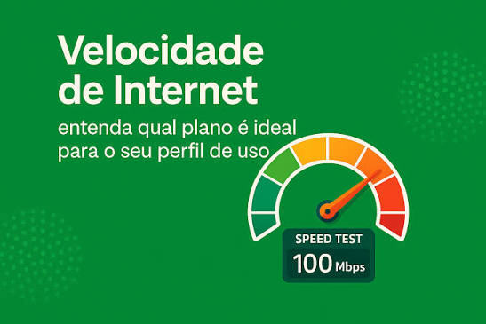
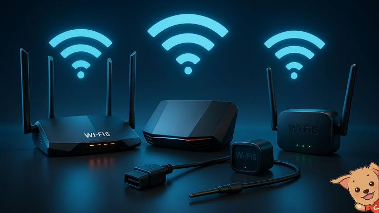

Internet com Altissima Velocidade
No mundo digital de hoje, ter uma internet rápida não é mais um luxo — é uma necessidade. Seja para trabalhar em home office sem interrupções, assistir às suas séries favoritas em 4K, jogar online com o menor ping ou expandir o seu negócio, você precisa de uma conexão em que possa confiar.
- Velocidade Real: Sabe aquela velocidade que você contrata? Você recebe de verdade. Chega de travamentos e telas de carregamento.
- Estabilidade de Fibra: Tecnologia de ponta que garante uma conexão limpa, segura e sem oscilações.
- Suporte Humano e Ágil: Esqueça os robôs e as esperas intermináveis. Nosso time de atendimento é local, rápido e pronto para resolver o que você precisar.
- Planos Sob Medida: Temos o pacote ideal para o que você precisa, desde o usuário casual até empresas de grande porte, sempre com o melhor custo-benefício da região.
Esqueça o Wi-Fi Lento: Conheça a Internet da [Nome da Empresa] com Roteador Super Rápido
Você já contratou um plano de internet alto, mas o Wi-Fi continuou travando no quarto ou na sala? Na BKS-Internet, nós sabemos que uma internet de fibra óptica só é perfeita se o sinal sem fio acompanhar essa velocidade. Por isso, todos os nossos planos acompanham um roteador super rápido de última geração, projetado para levar a máxima potência da nossa ultravelocidade para todos os cantos da sua casa. Nossa tecnologia distribui o sinal de forma inteligente, permitindo que você conecte vários dispositivos ao mesmo tempo — smartphones, TVs 4K, notebooks e videogames — sem nenhuma perda de desempenho, engasgo ou queda de conexão.

- Ultra Alcance: Sinal forte e estável atravessando paredes, garantindo cobertura total na sua casa ou empresa.
- Múltiplas Conexões Sem Travar: Conecte a família toda e os aparelhos inteligentes simultaneamente com estabilidade total.
- enos Latência (Ping Baixo): Perfeito para quem joga online, faz videoconferências de trabalho ou assiste a transmissões ao vivo.
- Instalação Grátis e Pronta para Usar: Nossa equipe técnica configura tudo na hora para você extrair o desempenho máximo do roteador desde o primeiro minuto.Não adianta ter uma Ferrari e dirigir em uma estrada de terra. Tenha a melhor fibra óptica com o melhor roteador do mercado.